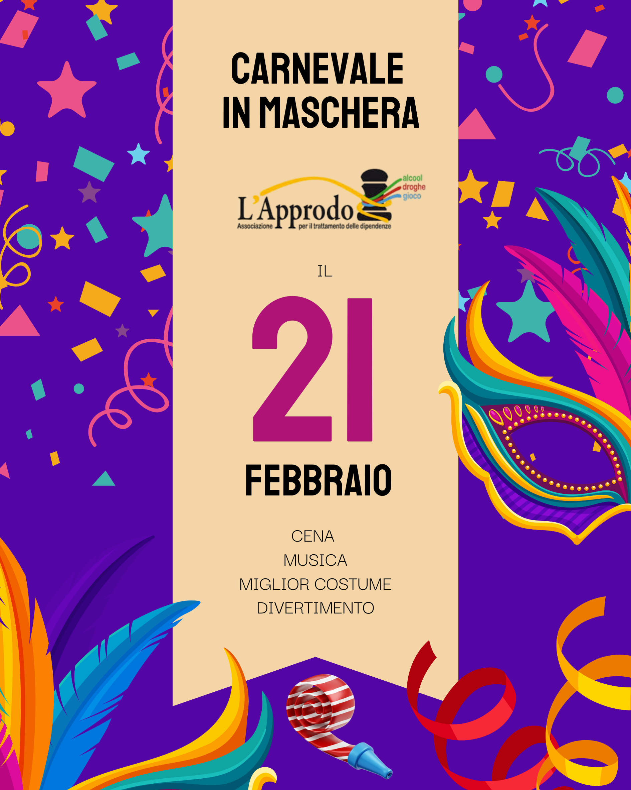
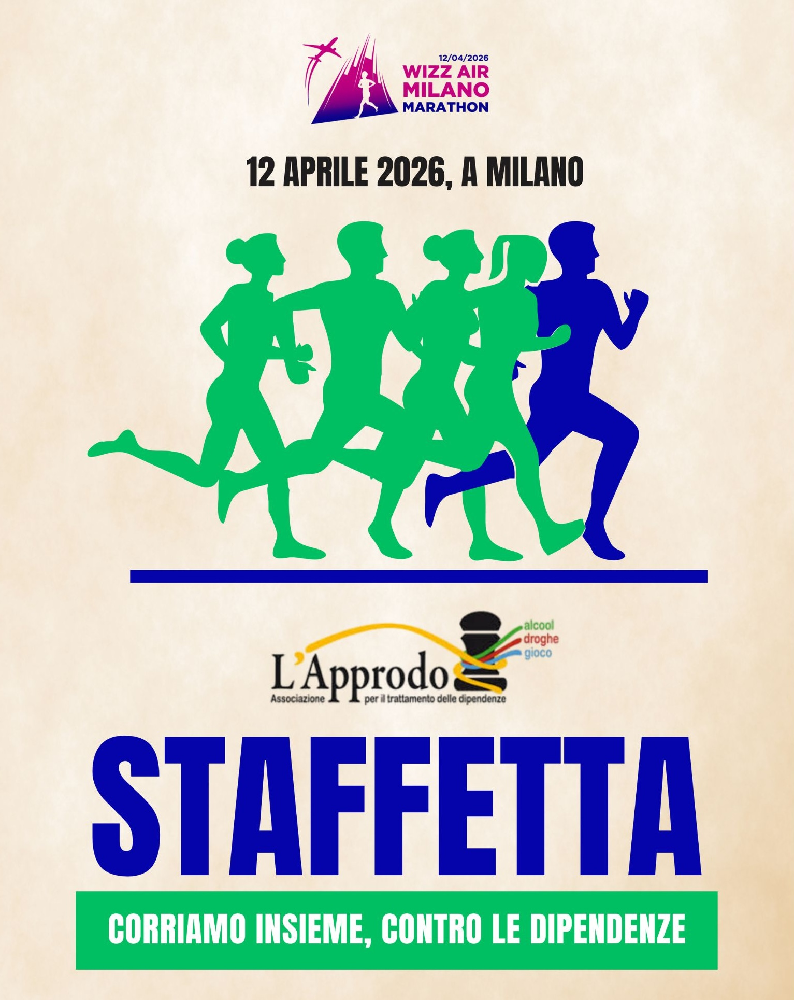
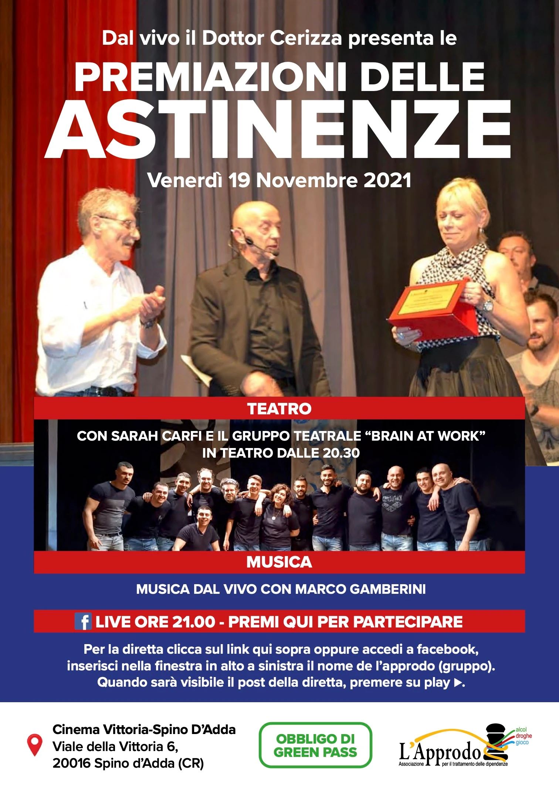

Alla sesta partita contro la Svezia abbiamo vinto ai rigori. Una gioia indescrivibile. Seoul è stata la nostra vera rinascita collettiva.
DALLA FATICA
ALLA FESTA
IL PASSATO CHE UNISCE

Carnevale in Maschera
Cena e musica al Feudo di Agnadello.

Milano Marathon
Correre insieme verso il traguardo comune.
Calcio-balilla umano
Sfide giganti e gioco di squadra.

Traguardi Astinenze
I successi passati dei nostri ragazzi.
IL FUTURO CHE CI ASPETTA
NEW

Premiazioni astinenze: tornare umani
Celebriamo chi ha scelto di riabbracciare la propria umanità.